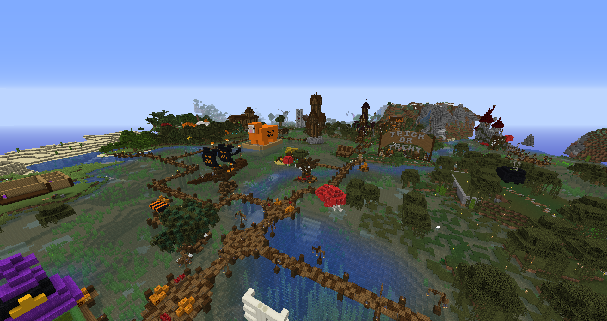
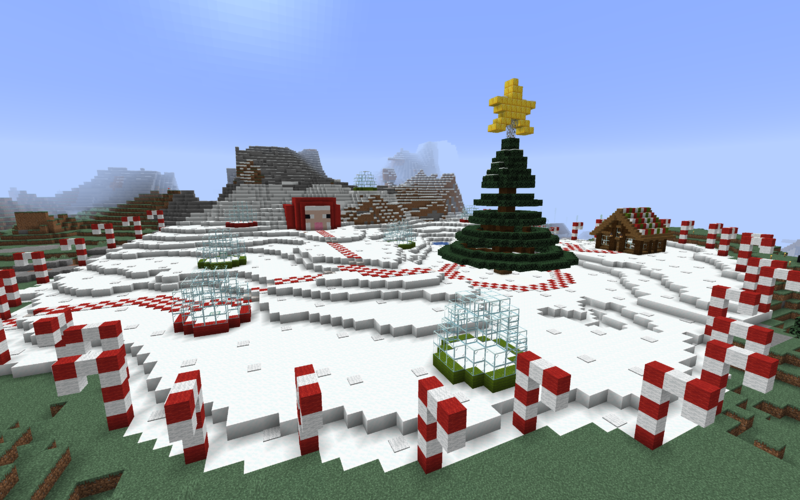

The Events of Season One

The 2019 Halloween Event
The Baked Potatarium Halloween Event for 2019 (Nicknamed Halloween Town) was the first ever seasonal event held on the server. A trailer was released to announce the Halloween Event on September 29, 2019. The event officially began on October 1st and was held in a swamp biome between the Mewffin Isles and the Crutionix Public Use Guardian Farm. The trailer features the original Halloween Town setup before being opened to the public, as prepared by OnyonSwomp and Crutionix. Halloween Town featured several 3D pixel arts, including a giant pumpkin and skull, along with custom trees and a slime wearing a witches hat.
The event was advertised to include activities for server members to enjoy including a build competition that would last the entire month of October and an event where the time of day would be halted at dusk, to be held on October 31st. Special decorative heads were also advertised as being available for a limited time during the event. This event marks the first time that users could teleport to an open, accessible space. Previously teleports were reserved for in-game user polling, which only provides a teleport in and out of the polling location.
The top three finalists were Meagansan2000 (1st), Blue__Sparrow (2nd) and Eternaldoom (3rd), as pictured below:



The 2019 Christmas Event
The Baked Potatarium Christmas/Holiday Event for 2019 (Nicknamed Holiday Hills) was the second seasonal event to take place on the server. The event follows the Halloween Event (2019). The event included activities, shopping opportunities, a secret Santa event, opportunities to build and also a snow-globe decoration competition. The event officially began on December 1, 2019 and ran through until the New Year.
The top three finalists of the snow globe decorating competition were; Crutionix (1st), The_MCKid (2nd) and Eternaldoom (3rd), as pictured below: